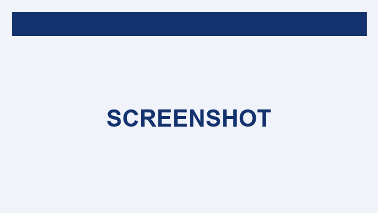

Release notes 9.0.0
Welcome to the 9.0.0 release.
Highlights
| Feature | Status |
|---|
| Chromium routes | stable |
| PDF remediation | new |
Code sample
func main() {
fmt.Println("CODE-BLOCK-MARKER")
}
Checklist
Removed legacy flag
- ☑ Done item DONE-TASK
- ☐ Open item OPEN-TASK
Glossary
- Gotenberg
- A document-to-PDF API.
- LibreOffice
- Office suite used for conversions.
Links
Visit https://gotenberg.dev for docs.

SANITIZE-ME-MARKER
Changelog
- 9.0.0 - CHANGELOG-V9 new routes
- 8.25.0 - CHANGELOG-V8 maintenance
- 8.0.0 - first 8.x release